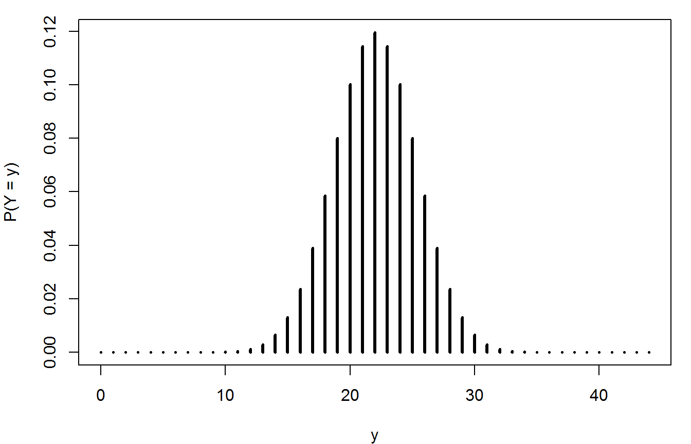

Chapter 5: binomial, geometric and Poisson distributions
Paul Northrop
2020-10-14
Source:vignettes/stat0002-ch5a-discrete-random-variables-vignette.Rmd
stat0002-ch5a-discrete-random-variables-vignette.RmdThe purposes of this vignette are to direct you to R functions relating to the discrete probability distributions considered in Chapter 5 of the STAT0002 notes and to provide code to do some of the things that appear in the lecture slides. First, we do this using the standard R functions (in the stats package). Then we repeat some of the calculations using the distributions3 package (Hayes and Moller-Trane 2019), which provides a neat way to work with random variables in R.
We illustrate these functions using the Australian birth times data, which are available in the data frame aussie_births.
> library(stat0002) Loading required package: rpanel Loading required package: tcltk Package `rpanel', version 1.1-4: type help(rpanel) for summary information > head(aussie_births) time sex weight 1 5 girl 3837 2 64 girl 3334 3 78 boy 3554 4 115 boy 3838 5 177 boy 3625 6 245 girl 2208
The stats package contains functions to evaluate the probability mass function (p.m.f.), cumulative distribution function (c.d.f.) and quantile function (which could also be called the inverse c.d.f.) of many discrete probability distributions, including the binomial, geometric and Poisson. It also contains functions to simulate random variates from these distributions. For a general description of these functions use ?Distributions. These functions are named in the following way, where xxx is the name (perhaps abbreviated) of the distribution in question: dxxx (p.m.f), pxxx (c.d.f), qxxx (quantile function) and rxxx (random variate generation).
The binomial distribution
Following the STAT0002 notes, let us suppose that (before we observe the data) the number \(Y\) of boy babies is a random variable with a binomial(44, \(p\)) distribution, where \(p\) is the probability that a randomly chosen birth produces a boy. We use the data to estimate \(p\).
> nboys <- sum(aussie_births[, "sex"] == "boy") > ngirls <- sum(aussie_births[, "sex"] == "girl") > phat <- nboys / (nboys + ngirls) > phat [1] 0.5909091
The function dbinom evaluates the p.m.f. of a binomial distribution. See ?Binomial for information about this function and pbinom, qbinom and rbinom. The following code produces a plot that is similar to the ones we looked at in a lecture. You could vary p, perhaps setting it to be equal to phat, and see the effect on the p.m.f. of the binomial distribution.
> # Plot the binomial(44, 1/2) p.m.f. > n <- nboys + ngirls > p <- 1 / 2 > y <- 0:n > # Note that dbinom calculates the probabilities all values in the vector y > plot(y, dbinom(y, n, p), type = "h", lwd = 3, ylab = "P(Y = y)", xlab = "y")

For the purposes of illustrating how the functions pbinom, qbinom and rbinom work, let us suppose that \(p = 1/2\). We used the values of the following probabilities during a lecture, when we considered how surprised we might to observe a number of boys 4 or more from the expected value of 22 under the hypothesis that \(p = 1/2\).
> # Calculate P(Y >= 26) = P(Y > 25) and P(Y <= 18) > pbinom(25, size = n, prob = 1 / 2, lower.tail = FALSE) [1] 0.1456076 > pbinom(18, n, 1 / 2) [1] 0.1456076
Suppose that we want to find the median of \(Y\). We can use qbinom:
> qbinom(1 / 2, n, 1 / 2) [1] 22 > # A check (look at the definition of the median in the notes) > pbinom(21:23, n, 1 / 2) [1] 0.4401979 0.5598021 0.6742061
The following code simulates 100 values from a Binomial(44, 1/2) distribution.
> ysim <- rbinom(100, 44, 1 / 2) > ysim [1] 22 26 22 18 22 30 24 24 20 21 18 21 22 24 19 20 26 22 24 17 23 20 16 24 26 [26] 24 17 24 25 18 20 18 24 24 24 27 19 22 18 21 20 25 26 22 21 25 22 25 23 22 [51] 21 22 26 23 21 28 20 23 22 23 26 23 22 22 19 23 23 19 27 23 27 21 24 21 22 [76] 25 18 22 23 23 20 24 24 28 21 21 21 25 25 23 21 24 23 30 28 19 26 28 20 21 > summary(ysim) Min. 1st Qu. Median Mean 3rd Qu. Max. 16.00 21.00 22.50 22.61 24.00 30.00
The distributions3 package
In September 2019 the distributions3 package (Hayes and Moller-Trane 2019) was released. A neat feature of this package is that it enables us to create an R object that corresponds to a particular random variable. Then we are able easily to use some simple R functions to perform calculations with this random variable. The way that this works is perhaps more intuitive than the way in which we use functions like dbinom() above.
> library(distributions3)
Attaching package: 'distributions3'
The following objects are masked from 'package:stats':
Gamma, quantile
The following object is masked from 'package:grDevices':
pdf
> # (The warnings tell us that the distributions3 package has functions with the
> # same names as functions from other packages and has `masked' them, that is,
> # R will use these functions from distributions3, not the other functions.)
> #
> # Create an R object that is, effectively, a binomial(n, 1/2) random variable
> Y <- Binomial(n, 1 / 2)
> Y
Binomial distribution (size = 44, p = 0.5)We reproduce the plot and repeat the calculation of the probabilities.
> # Reproduce the plot. > plot(0:n, pmf(Y, 0:n), type = "h", lwd = 3, ylab = "P(X = x)", xlab = "x")

> 1 - cdf(Y, 25) [1] 0.1456076 > cdf(Y, 18) [1] 0.1456076
Now we use the distributions package to performs some of the calculations that were involved in producing the lecture slides associated with the geometric and Poisson distributions.
The geometric distribution
We recreate the table in the lecture slides, of the observed frequencies and proportions and the corresponding estimated expected values under a geometric distribution fitted to the data.
R’s dgeom function, and the function Geometric in the distributions package, are is based on the number of failures before the first success, not the number of trials. Therefore, we subtract 1 below when we call the function dgeom.
> # Observed, adding a zero for greater than or equal to 6
> geom <- diff(c(0, which(aussie_births$sex == "boy")))
> max_w <- max(geom)
> geom <- c(1:(max_w + 1), geom)
> obs_freq <- table(geom) - 1
> obs_prop <- obs_freq / sum(obs_freq)
> round(obs_prop, 3)
geom
1 2 3 4 5 6
0.692 0.115 0.154 0.000 0.038 0.000
>
> # Estimated expected, using dgeom
> est_prob <- dgeom((1:max_w) - 1, prob = phat)
> est_prob <- c(est_prob, 1 - sum(est_prob))
> exp_freq <- nboys * est_prob
>
> # The table
> round(cbind(w = 1:(max_w + 1), obs_freq, exp_freq, obs_prop, est_prob), 3)
w obs_freq exp_freq obs_prop est_prob
1 1 18 15.364 0.692 0.591
2 2 3 6.285 0.115 0.242
3 3 4 2.571 0.154 0.099
4 4 0 1.052 0.000 0.040
5 5 1 0.430 0.038 0.017
6 6 0 0.298 0.000 0.011Alternatively, We could also use the distributions3 package to calculate the probabilities that we require.
> W <- Geometric(phat) > W Geometric distribution (p = 0.590909090909091) > # P(W = w), for w = 1, ..., 5 (note the -1) > pmf(W, 1:5 - 1) [1] 0.59090909 0.24173554 0.09889181 0.04045574 0.01655008 > # P(W >= 6) = 1 - P(W < 6) = 1 - P(W <= 5) > 1 - cdf(W, 5 - 1) [1] 0.01145774
The Poisson distribution
Here we use the distributions package to produce a plot of the p.m.f. of the Poisson(\(\hat{\lambda}\)) distribution, where \(\hat{\lambda}\) is equal to the sample mean of the numbers of babies born in each of the 24 hourly periods. We also calculate the probabilities involved in the table of observed and estimated expected frequencies given in the lecture.
> lambdahat <- 44 / 24 > N <- Poisson(lambdahat) > N Poisson distribution (lambda = 1.83333333333333)
> plot(0:10, pmf(N, 0:10), type = "h", lwd = 3, ylab = "P(N = n)", xlab = "n")
> > pmf(N, 0:4) [1] 0.15987975 0.29311287 0.26868680 0.16419749 0.07525718 > # P(N >= 5) > 1 - cdf(N, 4) [1] 0.03886592
References
Hayes, A., and R. Moller-Trane. 2019. distributions3: Probability Distributions as S3 Objects. https://github.com/alexpghayes/distributions3.